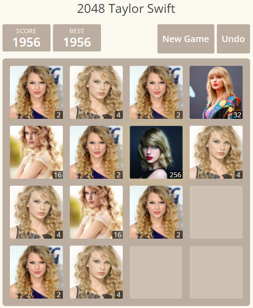
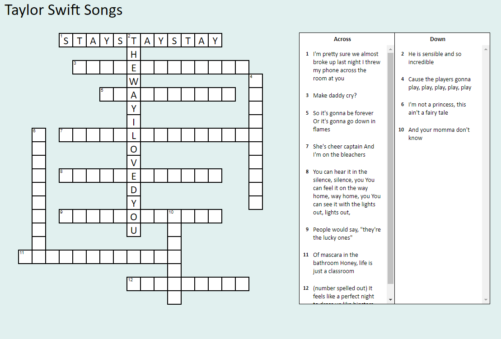

Taylordle is an adaptation of the internet-viral game Wordle. Like Wordle, the object of the game is to guess a five letter word in only six guesses. In Taylordle, however, there is a twist: this word must have something to do with Taylor Swift. This game was created by the Holy Swift podcast, which you can listen to by clicking here.
Taylor Swift 2048

Taylor Swift 2048 is another adaptation of a beloved game on the internet: 2048. To play, move the arrow keys to combine tiles on the grid to create bigger numbers (or in this case, new Taylor Swifts). To win, you must reach the highest possible number (2048), or unlock all of the Taylors.
Write your high score here:
Taylor Swift Crossword

This Taylor Swift activity is a new take on a classic word puzzle: the crossword. To solve this crossword, identify the Taylor Swift song that matches with the lyrics in the hint.
Use this slider to rate how much fun these activities are:
Click on the activity you would like to use for easy access: